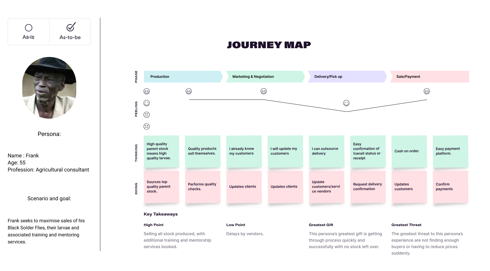

DR Miano's Black Soldier Fly Farms
An agri-business company seeking to reach new markets.

1.EMPATHISE
Interview/Seek to understand
In this phase I sought to understand the client’s challenges, needs and opportunities.I sought insight into his current model of business as well as the flow of resources. Furthermore, I tried to put myself in the shoes of his typical client who would be the main user. Dr Miano is a well established Agricultural consultant with experience of over 20 years in the agricultural sector. He has worked for many top governmental and NGO’s in the country. Having spotted an underserved segment of the economy, Dr Miano seeks to build a sustainable solution to provide high quality BSF stock as well as knowledge on the subject.The annual supply of dried BSF larvae for feed formulation in Kenya is about 3,600 metric tons, but governmental sources estimate the current demand at about 90,000 metric tons. It is this demand the farmer intends to tap into. Being that BSF larvae is an excellent source of protein and fats, Dr. Miano’s typical client is a smallholder farmer who engages in animal husbandry of some kind. This means that they keep pigs, ducks, chicken, fish or some kinds of animal that requires a regular source of protein. These clients can then be further segmented into 3 groups:- Those that wish to purchase only the mature larvae
- Those that wish to be trained on how to set up and run their own BSF unit
- Those that would like to receive consultancy services
2.DEFINE
Personas & Journey Map
Frank is a 55 year old husband and father of 3 children in Nyeri. He holds a job as an agricultural consultant and has a 3 acre farm on which he keeps a few chicken and pigs. In order to provide his animals with a highly nutritious source of protein, Frank has set up a black soldier fly unit. In addition to feeding his animals with the BSF larvae, Frank offers the remainder for sale, as well as offers training services on the establishment and maintenance of BSF units. His main objective is to make money to raise his standard of living. The journey maps below show the current undesirable scenario(fail) followed by the ideal scenario(success).- Fail
- Success 
Role objectives
Frank has the objectives of:- receiving fair compensation for produce i.e. maximising price and maximising sales
- reducing overhead costs
- minimising the effect of sudden price drops caused by the ever shifting forces of supply and demand
- Maximising customer retention
Challenges & Pain points
Currently the business owner is facing a few issues inconveniences:- Inability to segment markets
- Inability to accurately track customer history
- Manual record keeping and thus difficult data analysis
- Inability to reach certain market segments due to the manual nature of current marketing activities
Decision and problem solution
With these challenges and pain point in mind as informed by the customer journey maps, it was decided to focus on building an E-Commerce solution focused around Marketing.3.IDEATE
Diverge/converge
A number of ideas were shared in order to arrive at a solution that was beneficial to all members. Some of these ideas converged into better ones while others diverged and were eliminated altogether. Some of the key ideas shared were:- Build a social network
- Build an online repository
- Build a member database for individual farmers
Prioritization
The key conclusion was that E-Commerce functionality should be prioritised. Our solution proposes to offer a platform for the marketing and sale of BSF products and services focused on 3 arms:4.PROTOTYPE
Storyboards
I began by creating storyboards of a typical process consistent with the interview and journey maps. The first storyboard illustrated the typical fail scenario, while the second painted a picture of the desirable success scenario.- Fail Scenario vs Success Scenario storyboard
Wireframes
WireframesHigh Fidelity Mock ups & Prototype
The outcome was a prototype whose screenshots are shown below.